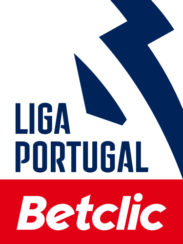
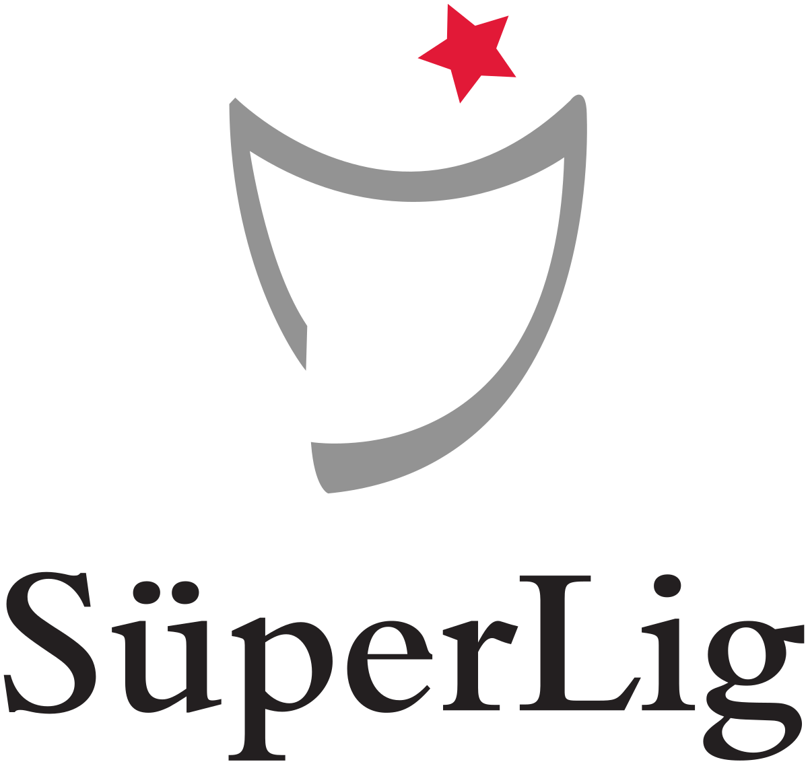

La Eredivisie, la principal liga de fútbol de los Países
Bajos, se estableció en 1956, reemplazando a la Hoofdklasse amateur. Desde
entonces, ha sido dominada por clubes como Ajax, Feyenoord y PSV
Eindhoven, que han logrado éxito tanto a nivel nacional como europeo.
Durante las décadas de 1960 a 1980, los clubes neerlandeses disfrutaron de
un gran éxito en la escena europea, especialmente Ajax, bajo el liderazgo
de Johan Cruyff. En la era moderna, la Eredivisie ha experimentado cambios
en su estructura y competitividad, con una mayor equidad entre los equipos
y un enfoque en la profesionalización y la comercialización. Aunque Ajax,
Feyenoord y PSV siguen siendo los clubes más destacados, otros equipos
emergentes también han contribuido a la competencia. A nivel
internacional, los clubes neerlandeses han tenido un éxito variable, pero
siguen siendo conocidos por su enfoque en el desarrollo de talentos
jóvenes y un estilo de juego atractivo. En resumen, la Eredivisie es una
liga emocionante y respetada en Europa, con una rica historia y un futuro
prometedor.
Los mejores equipos de la Eredivisie:
AFC Ajax: Es el club más exitoso de los Países Bajos,
con una rica historia y una amplia colección de títulos de liga y
copas. Ajax ha producido grandes leyendas del fútbol y ha tenido un
dominio histórico en la Eredivisie, además de lograr éxito a nivel
europeo con múltiples títulos de la Liga de Campeones.
PSV Eindhoven: Otro de los clubes más importantes en
la historia de la Eredivisie, PSV ha sido un competidor consistente
por los títulos de liga y ha tenido éxito tanto a nivel nacional como
internacional. Han ganado múltiples títulos de liga y han dejado su
marca en competiciones europeas.
Feyenoord: Si bien Feyenoord ha tenido altibajos a lo
largo de su historia, es uno de los clubes más antiguos y emblemáticos
de los Países Bajos. Han ganado varios títulos de liga y copas,
incluida una memorable victoria en la Copa de Europa en 1970, siendo
el primer club neerlandés en lograrlo.
Los mejores jugadores que han pasado por la Eredivisie
Johan Cruyff: Considerado uno de los mejores
futbolistas de todos los tiempos, Cruyff jugó para el Ajax y el
Feyenoord en la Eredivisie. Su habilidad técnica, visión de juego y
capacidad para marcar goles lo convierten en una leyenda del fútbol.
Marco van Basten: Otro gran nombre del fútbol
holandés, van Basten brilló con el Ajax y el PSV en la Eredivisie
antes de hacerse famoso en el AC Milan. Es recordado por sus
impresionantes habilidades goleadoras y su capacidad para anotar goles
espectaculares.
Ruud Gullit: Este versátil jugador holandés dejó una
marca en la Eredivisie jugando para equipos como el Feyenoord y el
PSV. Su habilidad para dominar en diferentes posiciones en el campo y
su liderazgo lo convierten en uno de los mejores de la historia de la
liga holandesa.
Dennis Bergkamp: Conocido por su habilidad técnica
excepcional y su visión de juego, Bergkamp es una leyenda del fútbol
holandés. Jugó para el Ajax en la Eredivisie antes de destacarse en
clubes como el Inter de Milán y el Arsenal.
Johan Neeskens: Otro jugador clave en la historia del
fútbol holandés, Neeskens jugó para el Ajax y el FC Barcelona, entre
otros clubes. Su habilidad para dominar el mediocampo y su capacidad
para marcar goles lo convierten en uno de los mejores de la
Eredivisie.
Algunas de las mejores jugadas en la Eredivisie:
Primeira Liga (Portugal)

La Liga de Fútbol de Portugal, o
Primeira Liga, tiene una rica historia que se remonta a
su fundación en 1934. Inicialmente, la competición fue dominada por
equipos de Lisboa y Oporto, con el Sporting CP, el SL Benfica y el FC
Porto emergiendo como los principales contendientes. A lo largo de los
años, la liga ha evolucionado, expandiéndose para incluir equipos de todo
el país y consolidando su posición como una de las ligas más competitivas
de Europa.
Los mejores equipos de la Primeira Liga:
Sport Lisboa e Benfica (SL Benfica): Fundado en 1904,
el SL Benfica es uno de los clubes más exitosos y populares de
Portugal. Con un rico historial de títulos nacionales e
internacionales, el Benfica ha dominado la Primeira Liga a lo largo de
los años y ha sido un contendiente constante en competiciones europeas
como la Liga de Campeones de la UEFA.
Futebol Clube do Porto (FC Porto): Fundado en 1893,
el FC Porto es otro de los clubes más importantes de Portugal y uno de
los "tres grandes". Con una sólida estructura deportiva y una exitosa
gestión, el Porto ha ganado numerosos títulos de liga y ha dejado su
huella en competiciones europeas, incluyendo la Liga de Campeones de
la UEFA.
Sporting Clube de Portugal (Sporting CP): Fundado en
1906, el Sporting CP completa el trío de los "tres grandes" del fútbol
portugués. A lo largo de su historia, el Sporting ha sido un
competidor constante en la Primeira Liga y ha producido una gran
cantidad de talentos futbolísticos. Aunque ha enfrentado períodos de
altibajos, el Sporting continúa siendo uno de los equipos más
destacados de Portugal.
Mejores jugadores que han pasado por la Primeira Liga:
Eusébio da Silva Ferreira: Considerado uno de los
mejores futbolistas portugueses de todos los tiempos, Eusébio jugó la
mayor parte de su carrera en el SL Benfica, donde marcó una cantidad
impresionante de goles y ganó numerosos títulos de liga.
Cristiano Ronaldo: Aunque su carrera se ha
desarrollado mayormente fuera de Portugal, Cristiano Ronaldo comenzó
su trayectoria profesional en el Sporting CP antes de destacarse en
clubes como el Manchester United, el Real Madrid y la Juventus. Es
considerado uno de los mejores futbolistas de la historia y ha dejado
una marca imborrable en la Primeira Liga.
Luís Figo: Otro talentoso futbolista portugués, Luís
Figo también comenzó su carrera en el Sporting CP antes de dar el
salto a clubes como el FC Barcelona y el Real Madrid. Figo fue
conocido por su habilidad en el regate y su visión de juego
excepcionales.
Deco: Nacido en Brasil pero nacionalizado portugués,
Deco tuvo una exitosa carrera en la Primeira Liga con el FC Porto,
donde ganó múltiples títulos de liga y la Liga de Campeones de la UEFA
antes de destacarse en clubes como el FC Barcelona y el Chelsea.
Alguna de las mejores jugadas de la Primeira Liga
Süper Lig (Turquía)

La Liga Turca de Fútbol, también conocida como Süper Lig,
es la máxima categoría del fútbol profesional en Turquía. Fundada en 1959,
la liga ha sido el principal escenario donde los clubes turcos compiten
por el título nacional y la gloria futbolística. A lo largo de su
historia, la Süper Lig ha experimentado varios cambios en su formato y
estructura, pero ha mantenido su posición como una de las ligas más
competitivas del mundo, atrayendo a jugadores y entrenadores de renombre
internacional.
Los mejores equipos de la liga turca:
Galatasaray SK: Fundado en 1905, Galatasaray es uno
de los clubes más exitosos de Turquía. Han ganado numerosos títulos de
liga a lo largo de los años, incluyendo el récord de 22 títulos de
Süper Lig. Además de su éxito nacional, Galatasaray ha tenido un
impacto notable en competiciones europeas, ganando la Copa de la UEFA
en 2000.
Fenerbahçe SK: Fundado en 1907, Fenerbahçe es otro de
los clubes más grandes y exitosos de Turquía. Han ganado varios
títulos de liga y copas nacionales, compitiendo regularmente por los
primeros puestos en la Süper Lig. Fenerbahçe también ha dejado su
huella en competiciones europeas, alcanzando las semifinales de la
Liga de Campeones de la UEFA en 2008.
Beşiktaş JK: Fundado en 1903, Beşiktaş es uno de los
clubes más antiguos y prestigiosos de Turquía. Han ganado varios
títulos de liga y copas nacionales a lo largo de su historia,
compitiendo ferozmente contra sus rivales de Estambul y otros equipos
de toda Turquía. Beşiktaş también ha tenido participaciones destacadas
en competiciones europeas.
Los mejores jugadores que han pasado por la liga turca:
Alex de Souza: Conocido simplemente como Alex, es
considerado uno de los mejores futbolistas extranjeros que han jugado
en la Süper Lig. Pasó la mayor parte de su carrera en Fenerbahçe,
donde se convirtió en un ídolo para los aficionados y dejó una marca
indeleble en la historia del club.
Hakan Şükür: Uno de los máximos goleadores de la
historia de la Süper Lig, Hakan Şükür es un ícono del fútbol turco.
Jugó la mayor parte de su carrera en Galatasaray, donde anotó una
cantidad impresionante de goles y ganó varios títulos de liga.
Arda Turan: Nacido en Estambul, Arda Turan es otro de
los jugadores destacados que ha brillado en la Süper Lig. Pasó gran
parte de su carrera en Galatasaray y luego tuvo una exitosa carrera en
clubes europeos como Atlético de Madrid y Barcelona.
Mesut Özil: Con su llegada al Fenerbahçe SK en 2021,
Mesut Özil aportó su talento y experiencia al fútbol turco. Reconocido
por su visión de juego y precisión en los pases, Özil es uno de los
jugadores más destacados de la liga.
Fatih Terim: Si bien no fue un jugador, Fatih Terim
es una figura legendaria en la Süper Lig como entrenador. Ha tenido un
gran éxito en clubes como Galatasaray, guiándolos a múltiples títulos
de liga y copas nacionales, así como a victorias históricas en
competiciones europeas.